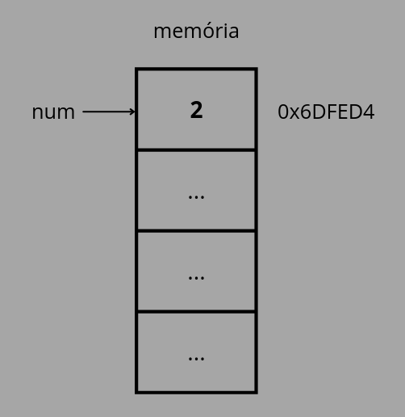
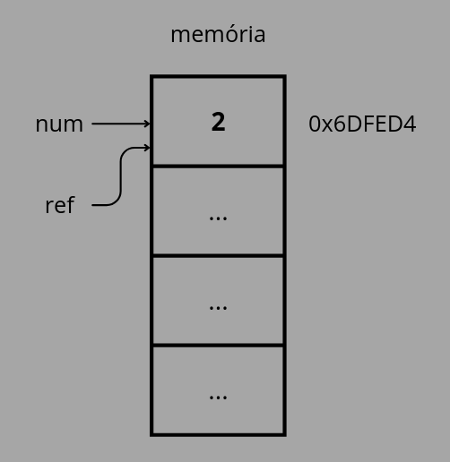
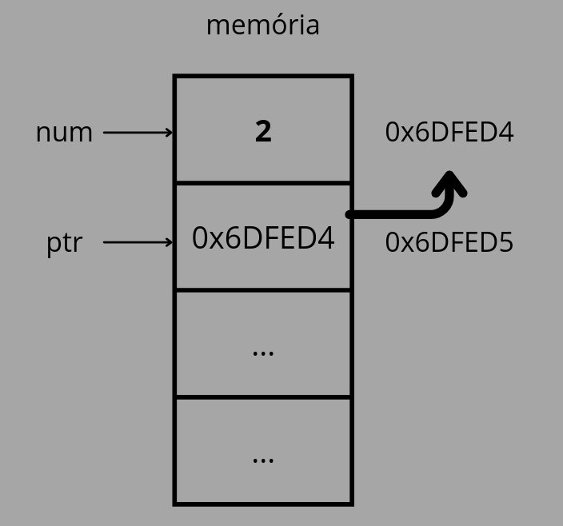
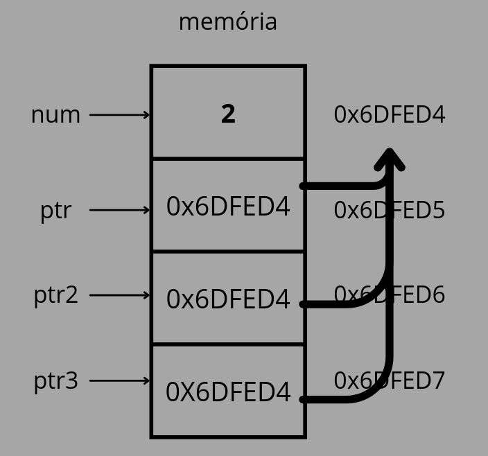
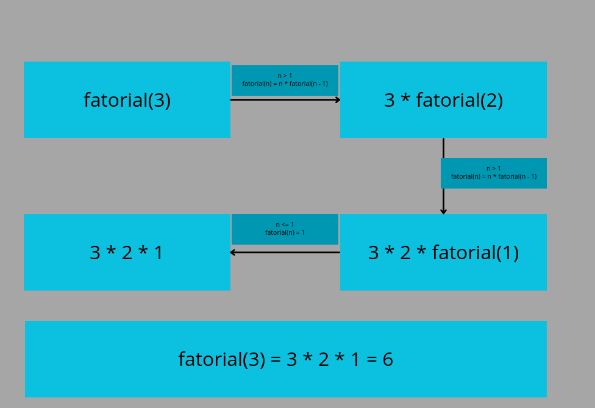
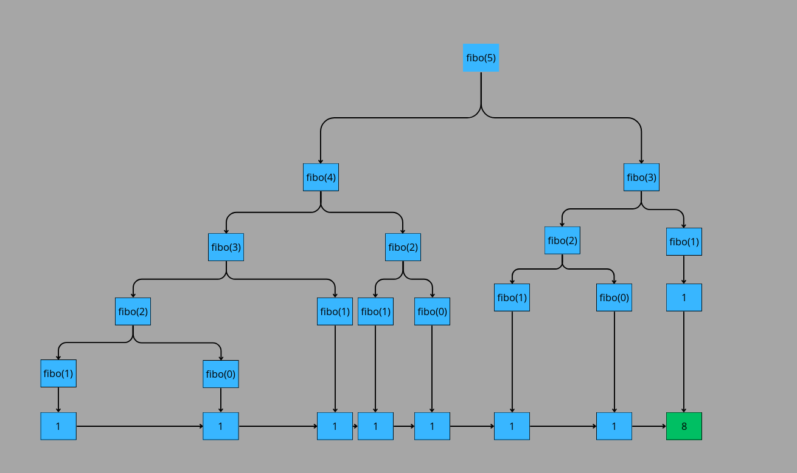
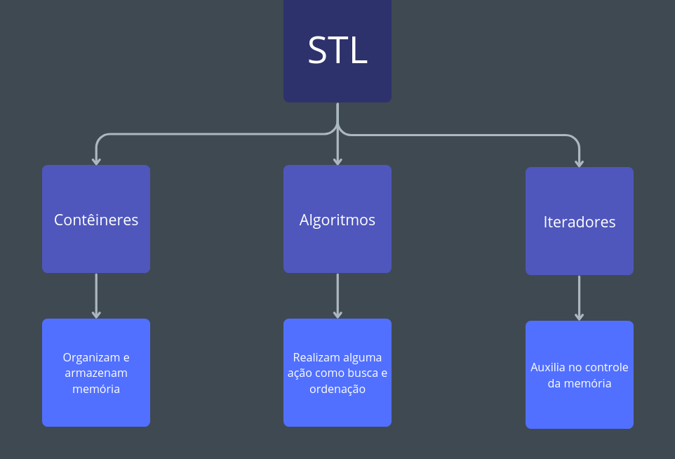

Dia 1
Introdução à Complexidade Assintótica
Introdução à Algoritmos
Definição de Algoritmos
De forma informal, um algoritmo pode ser definido como qualquer procedimento computacional bem definido, que recebe um valor (ou conjunto de valores) como entrada e produz um valor (ou conjunto de valores) como saída (Cormen, 2002).
Outra forma de enxergar algoritmos é como ferramentas para resolver problemas computacionais específicos. Nessa perspectiva, o algoritmo descreve a relação entrada-saída de um programa (Cormen, 2002).
Assim, pode-se entender um algoritmo como um conjunto de instruções destinadas a realizar uma tarefa.
Exemplo:
Dada a sequência <4, 6, 2, 7, 8> como entrada, um algoritmo de ordenação pode seguir os seguintes passos:
- Comparar os elementos da sequência;
- Identificar pares fora de ordem;
- Trocar esses elementos de posição;
- Repetir o processo até que não existam mais elementos fora de ordem.
Assim, o algoritmo retorna <2, 4, 6, 7, 8> como saída.
Etapas para resolver problemas
História e Evolução dos Algoritmos
Antiguidade
- Algoritmo de Euclides (300 a.C.)
Técnica para encontrar rapidamente o MDC (máximo divisor comum) de dois inteiros.
Idade de Ouro Islâmica (Século IX)
- Muhammad ibn Musa al-Khwarizmi, matemático que contribuiu para o desenvolvimento da álgebra.
- Para resolver equações matemáticas, al-Khwārizmī seguia sistematicamente uma sequência de passos, conceito fundamental de algoritmo.
- Após ser traduzido para o latim, seu livro sobre numerais hindus recebeu o título Algorithmi de Numero Indorum, origem da palavra algoritmo.
Século XIX
- Ada Lovelace criou o que é considerado o primeiro algoritmo de computador, projetado para calcular números de Bernoulli na máquina analítica de Babbage.
Década de 1930
- Alan Turing: Formalizou o conceito de computação com a Máquina de Turing, estabelecendo a base teórica da ciência da computação moderna.
- Introduziu a noção de “computável”.
“Introdução” à Estruturas de Dados
Para compreender o conceito de Estruturas de Dados, é fundamental conhecer primeiro os Tipos Abstratos de Dados (TADs). Esses dois conceitos estão diretamente relacionados, mas não são a mesma coisa.
Tipos Abstrados de Dados (TAD)
Um TAD é formado por:
- um conjunto de dados
- um conjunto de operações para manipular esses dados
Vamos exemplificar a seguir.
Podemos definir o TAD Pilha da seguinte forma:
Pilha{topo, tamanho}
Para manipular esse conjunto podemos usar as operações:
criarPilha()- cria uma pilha com tamanho npush(x)- empilha um elemento xpop()- remove o elemento do topotop()- consulta o topoisEmpty()- verifica se está vaziadestruirPilha()- apaga uma pilha
Note que foi definido apenas quais dados existem e quais operações podem ser feitas, sem dizar como isso é implementado.
Definição de Estruturas de Dados
Uma Estrutura de Dados é a implementação concreta de um TAD em uma linguagem de programação, usando algoritmos.
As estruturas estabelecem:
- a forma que os dados são dispostos na memória
- como as operações são realizadas
Vamos implementar a Pilha, usando um array:
struct Pilha {
int* dados; // array que armazena os elementos
int topo; // índice do topo da pilha
int capacidade; // tamanho máximo da pilha
};
Pilha* criarPilha(int capacidade) {
Pilha* p = new Pilha;
p->dados = new int[capacidade];
p->capacidade = capacidade;
p->topo = -1;
return p;
}
void push(Pilha* p, int x) {
if (p->topo == p->capacidade - 1)
throw std::overflow_error("Pilha cheia");
p->dados[++p->topo] = x;
}
int pop(Pilha* p) {
if (isEmpty(p))
throw std::underflow_error("Pilha vazia");
return p->dados[p->topo--];
}
bool isEmpty(Pilha* p) {
return p->topo == -1;
}
void destruirPilha(Pilha* p) {
delete[] p->dados;
delete p;
}
Importância nos Dias Atuais
Revisão de C++
Motivação
Uma dúvida comum sobre as matérias introdutórias de Algoritmos e Estruturas de Dados é sobre a linguagem utilizada, tanto que raramente vemos aulas utilizando linguagens de alto nível como Python e Java, mesmo que as aplicações estejam presentes nos dois.
O motivo disso é o controle de memória poderoso que as linguagens de baixo nível como C, C++ e Rust possuem. Por exemplo, por que nós deveríamos implementar listas em Java, sendo que C++ permite a manipulação direta de memória (além de ser BEM mais rápido…). No fim, utilizamos linguagens de baixo nível para matérias como essas por conta de sua praticidade em torno do controle de memória, onde, mesmo não impedindo a implementação em linguagens de alto nível, definitivamente é a opção mais eficiente.
Porém, por que nós iremos utilizar C++ ao invés de C e Rust?
Excelente pergunta!
SPOILER!
Simplicidade :)Escolhemos o C++ principalmente por conta de seu alto uso em disciplinas de graduação e pela sua grande versatilidade de ferramentas, tornando esse curso uma porta de entrada mais segura para disciplinas futuras.
C++ x C
Como o nome já diz, o C++ tem como objetivo principal adicionar novas funcionalidades para o C, sendo as principais adições:
-
Suporte para programação orientada ao objeto (POO).
-
Inclusão do STL (Standard Template Library).
-
Sistema de gerenciamento de memória mais seguro.
Essas mudanças não tornam C++ uma linguagem “superior” ao C, mas diferenciam o principal uso das duas. Veremos a seguir as principais “diferenças” entre cada sintaxe, de forma a se preparar para analisar alguns algoritmos em C++.
Comandos Simples
Variáveis, Condicionais, Loops e Funções
Pelo incrivel que pareça, a sintaxe de C++ é extremamente similar à sintaxe de C (um pouco óbvio, mas é bom assentuar).
Em geral, todas essas estruturas irão funcionar exatamente da mesma forma em C++, logo, revisaremos cada uma delas de forma rápida.
Variáveis
A declaração de variáveis segue o padrão tipo + nome da variável:
int main() {
int inteiro;
float flutuante;
long woooooooow;
bool booleano;
char caractere1, caractere2; // Ao colocar a vírgula, estamos declarando 2 (duas) variáveis do tipo char.
return 0;
}
Do mesmo jeito, as operações vistas nos tipos int, float, long em C funcionam exatamente da mesma forma em C++:
int main(){
int num1, num2, num3, num4;
num1 = 2;
num2 = 5;
num3 = 10;
num1 += num2 // num1 = 2 + 5 = 7
num4 = num2 * num3; // num4 = 5 * 10 = 50
num2 -= 1; // num2 = 5 - 1 = 4
// (...)
return 0;
}
Arrays
Embora arrays também sejam tipos, separamos em outro sub-tópico por ser importante para tópicos futuros.
Arrays são apenas “coleções ordenadas” de elementos de algum tipo. Declaramos algum array da seguinte forma:
tipo + nome do array[tamanho do array].
Cada elemento de um array pode ser acessado após a declaração, apenas colocando sua posição dentro dos colchetes:
int arrayInt[4];
arrayInt[0] // Primeiro elemento do array
arrayInt[1] // Segundo elemento do array
arrayInt[2] // Terceiro elemento do array
arrayInt[3] // Quarto elemento do array
Após isso, podemos atribuir seus valores de duas maneiras, individualmente (atribuindo um por um), ou de forma direta (igualando à alguma lista de mesmo tamanho durante a declaração):
// podemos "encher" um array das seguintes formas:
int arrayInt[4];
arrayInt[0] = 0;
arrayInt[1] = 1;
arrayInt[2] = 2;
arrayInt[3] = 3;
// ou também podemos atribuir seu valor durante a declaração:
int arrayInt[] = {0, 1, 2, 3}
Condicionais
As condicionais serão, como o nome sugere, estruturas que irão executar alguma ação com base em alguma condição, onde será dada por um booleano, ou uma expressão que retorne um booleano.
Iremos utilizar, similar ao C, o comando if (se) e else(senão) para representar essa estrutura, tendo como padrão:
if(condição){
//(...)
}
//ou, caso queira utilizar um caso contrário:
if(condição){
//(...)
}
else{
//(...)
}
Caso você queira encontrar algum caso que não seja exatamente o contrário de sua condição, você pode juntar os dois comandos, formando um else if, como visto abaixo:
if(condição1){
//(...)
}
else if(condição2){ // note que o que irá acontecer nesse "else if" apenas acontece se a
// condição 1 for falsa e a condição 2 for verdadeira
//(...)
}
Podemos utilizar condicionais para garantir que um pedaço de nosso programa funcione de formas específicas para cada caso:
int main() {
int num1, num2, num3, num4;
num2 = 5;
num3 = 10;
if(num1 == num2){
num4 = num1;
}
else if(num1 == num2 * num3){
num4 = num3;
}
else{
num4 = 0;
}
return 0;
}
Existe também outra estrutura em C++ que é o switch case. Ele irá funcionar de forma similar ao if, porém ao invés de escolher um caso com base em uma proposição, ela irá escolher com base no valor de alguma variável.
O comando switch segue o padrão:
tipo variavel;
switch(variavel) {
case(valor1):
//(...)
break;
case(valor2):
//(...)
break;
//(...)
default: //default é um "caso padrão", mas é opcional.
//(...)
}
Geralmente o uso do switch case é focado em números inteiros, principalmente para ver casos onde algum número se iguala a outro.
int main(){
int dia;
dia = 2;
switch(dia){
case 1:
// é domingo
break;
case 2:
// é segunda
break;
case 3:
// é terça
break;
case 4:
// é quarta
break;
case 5:
// é quinta
break;
case 6:
// é sexta
break;
case 7:
// é sábado
break
}
return 0;
}
Loops
Os loops tem 3 (três) “tipos de estrutura” principais, onde cada uma tem algum uso específico. Elas seguem, respectivamente, os seguintes padrões de escrita:
for(variavel de controle; condição ; contador)
while(condição)
do{
//(...)
}while(condição)
Caso você nunca tenha visto C ou C++, talvez esteja se perguntando: qual a diferença entre eles?, o que é bem normal.
Em geral, cada um deles possuem pequenas coisas que os tornam diferentes e “melhores” em determinados casos:
for() := Quando você precisa saber qual passo do loop você está
while() := Quando você não precisa saber o passo que você está.
do{}while() := Quando você quer realizar uma ação antes da condição acontecer.
No fim, você até consegue utilizar qualquer um deles de forma análoga, porém por questões de boas práticas e performance, o recomendado é utilizar cada um em seu respectivo contexto.
int main(){
int array[5];
for(int i = 0; i < 5; i += 1){
array[i] = i;
}
return 0;
}
Você sabe dizer o que esse loop faz?
SPOILER!
transforma o array em {0, 1, 2, 3, 4}, passando por cada posição dele.Funções
Em geral, funções são basicamente blocos de codigos que retornam algum valor. Nelas, podemos passar valores (que chamamos de parâmetros ou argumentos), esses valores não tem quantidade máxima e podem ser alterados dentro das funções, porém, retornam ao valor inicial após ela terminar.
Futuramente iremos descobrir como fazer essas funções alterarem permanentemente os parâmetros, porém, por agora assumiremos que elas são “funções puras” que não afetam eles.
As funções são declaradas da seguinte forma:
tipo nome_da_função(){
// conteúdo da função
//(...)
return valor // esse valor é do tipo da função.
}
//para adicionar parâmetros, basta declara-los em seus parênteses:
tipo nome_da_função(tipo1 valor1, tipo2, valor2){
// conteúdo da função
//(...)
return valor // esse valor é do tipo da função.
}
Após a declaração e definir o que está na função, você poderá chamá-la em qualquer corpo, apenas colocando o nome dela e seus parâmetros:
int modulo(int a){
if(a < 0){
return -a;
}
return a;
}
int main(){
int valor1, valor2;
valor1 = -9;
valor2 = modulo(valor1);
// valor2 será 9.
return 0;
}
Ponteiros
Calma, não se assuste.
Sabemos que esse tópico é meio chatinho para algumas pessoas, porém é de extrema importância. Não iremos abordar tanta coisa sobre ponteiros, apenas entender por cima como eles funcionam e aplicar na criação de estruturas de dados mais complexas.
Basicamente, ponteiros são variáveis que guardam endereços de objetos na memória. Mas… O que realmente são endereços?
Endereços de Memória e Referências
Suponha que temos algum valor em nosso código, por exemplo, uma variável inteira num = 2.
Quando declaramos essa variável num, armazenamos ela em um pequeno espaço na nossa memória para não perdê-la durante a execução do programa. O endereço da variável num seria uma representação numérica de onde ela está armazenada.

Representação visual
Em C++ utilizamos o operador & para “recolher” o endereço de alguma variável.
int main(){
int num = 2;
printf("%d", &num);
// Saída: endereço da variavel, ou nesse caso, "0x6DFED4".
return 0;
}
Nesse sentido, também podemos utilizar o operador & como um “alias” de outras variáveis, ou seja, caso ele seja alterado, o valor original também será:
int main(){
int num = 2;
int &ref = num; //faz referência ao num
printf("%d", num);
printf("%d", ref); //a saída dos dois será 2.
//caso você altere a ref:
ref = 3;
printf("%d", num);
printf("%d", ref); // a saída dos dois será 3.
return 0;
}
Visualmente, a declaraçao de int &ref = num seria como se criassemos uma variável ref “dentro da casinha do num”, onde eles compartilhariam o mesmo endereço e valor.

Representação visual
Agora sim, Ponteiros
Como dito anteriormente, ponteiros são simplesmente variáveis que guardam endereços de objetos na memória, ou seja, falamos que eles “apontam” para um objeto na memória. Todos os ponteiros tem um tipo associado que especifica o tipo do objeto que estará “apontando”. Utilizamos também o prefixo (*) na declaração de ponteiros, como visto no exemplo abaixo:
int main() {
int num = 2; // apenas uma declaração de um inteiro.
int* ptr; // apenas uma declaração de um ponteiro de inteiro.
int *ptr2; // outra declaração de um ponteiro de inteiro.
return 0;
}
int main() {
int num = 2;
int *ptr = # // atribui o endereço de "num" para "ptr".
int *ptr2 = ptr; // atribui o endereço em "ptr" (ou seja, o endereço de "num") para "ptr2".
printf("%d", ptr2); // print do endereço de num (0x...).
printf("%d", *ptr2); // print do valor em num (2).
return 0;
}
Voltando para o exemplo do num = 2, mudaremos um pouco o nosso objetivo. Dessa vez queremos armazenar o endereço de num em outra variável.
Para isso, usaremos o ponteiro de inteiro ptr, que como definimos mais cedo, é uma variável que armazena endereços. Após isso, igualaremos ao endereço de num utilizando o prefixo “&” para armazená-la.
int main() {
int num = 2;
int* ptr = #
return 0;
}
Nesse caso, ao invés de ter uma variável “na mesma casinha” de num, temos uma nova variável ptr que armazena o endereço de num.

Representação visual
Analogamente, caso seja necessário, podemos também igualar o valor do ponteiro ptr à outros ponteiros de mesmo tipo, o que seria o mesmo que igualar ao endereço de num.
int main() {
int num = 2;
int* ptr = #
int* ptr2 = ptr;
int* ptr3 = # // ptr3 == ptr2 == ptr1
return 0;
}
Lembrando que, mesmo que os ponteiros apontem para o mesmo endereço, não significa que eles estão no mesmo espaço de memória, como visto abaixo:

Representação visual
Tipos Estruturados
Em geral, tipos estruturados (ou structs), são como “tipos definidos por nós”, podendo armazenar outros tipos dentro dela. Elas seguem o seguinte padrão de escrita:
struct TipoEstruturado {
tipo1 valor1;
tipo2 valor2;
//(...)
}
Podemos também acessar cada um desses valores dentro de nosso código, por exemplo:
struct Par{
int direita;
int esquerda;
}
int main(){
Par parzinho; //declara uma variável do "tipo" Par
parzinho.direita = 1;
parzinho.esquerda = 2;
return 0;
}
Mas, isso vocês já devem saber.
O grande diferencial entre structs em C e C++ é a possibilidade de colocar funções dentro delas!
Chamaremos essas “funções dentro do struct” de métodos, e eles podem ser acessados da mesma forma que uma variável é acessada.
struct Par {
int direita;
int esquerda;
int soma_dos_dois(){
return direita + esquerda;
}
void adicionar_na_direita(int valor){
direita += valor;
}
}
int main(){
Par parzinho;
int soma;
parzinho.direita = 1;
parzinho.esquerda = 2;
soma = parzinho.soma_dos_dois(); // soma = 1 + 2 = 3.
parzinho.adicionar_na_direita(soma) // parzinho.direita = 1 + 3 = 4.
return 0;
}
Recursão
A recursão é uma técnica de programação em que uma função se chama para resolver um problema. Geralmente ela é utilizada em problemas onde para chegar na esposta precisa se dividir em pequenos sub-problemas.
Para criar uma função recursiva, primeiro precisamos definir dois casos principais:
Caso de parada : caso onde a função irá parar de se chamar.
Caso recursivo : caso onde a função irá se chamar com um sub-problema menor.
int fatorial(int n){
if(n <= 1){ // caso de parada: n <= 1
return 1;
}
else{ // caso recursivo: n > 1
return n * fatorial(n - 1); // chamada recursiva
}
}
int main(){
int fat = fatorial(3); // fat = 3 * 2 * 1.
return 0;
}
Exemplos
Teoricamente seria apenas isso, mas vamos ver em prática como que a recursão funciona:
Iremos analisar a função fatorial:
Inicialmente na função main, chamamos fatorial(3):
fatorial(3);
if(3 <= 1) return 1; // como 3 > 1, passa para o else.
else{
return 3 * fatorial(3 - 1); // Retorno de fatorial(3)
}
Logo, teremos que ver o retorno de fatorial(3 - 1).
fatorial(3 - 1) = fatorial(2)
if(2 <= 1) return 1; // como 2 > 1, passa para o else:
else{
return 2 * fatorial(2 - 1); // Retorno de fatorial(2)
}
Logo, teremos que ver o retorno de fatorial(2 - 1).
fatorial(2 - 1) = fatorial(1)
if(1 <= 1) return 1; // como 1 = 1, fatorial(1) = 1

Representação visual
Então, fatorial(3) = 6.
Outro exemplo comum está na Sequência de Fibonacci.
Utilizaremos o seguinte código para exemplificar:
int fibo(int n){
if(n <= 1)return 1;
else return fibo(n - 1) + fibo(n - 2);
}
int main(){
int fib = fibo(5);
return 0;
}
A função fibo é um pouco diferente da função fatorial, principalmente por possuir duas chamadas recursivas. Então, vamos analisar como ela chega no resultado de fibo(5).
Inicialmente, temos que definir o caso recursivo e o caso de parada da função fibo():
int fibo(int n){
// Caso de parada: n <= 1
if(n <= 1)return 1;
// Caso recursivo: n > 1
return fibo(n - 1) + fibo(n - 2);
}
Após isso, veremos o que acontece após a declaração fibo(5):
fibo(5);
if(5 <= 1) return 1; // como 5 > 1, passa para o else.
else return fibo(5 - 1) + fibo(5 - 2) // retorno de fibo(5)
Logo, temos que fibo(5) = fibo(4) + fibo(3). Veremos a seguir o valor de fibo(4).
fibo(4);
if(4 <= 1) return 1; // como 4 > 1, passa para o else.
else return fibo(4 - 1) + fibo(4 - 2) // retorno de fibo(4)
Logo, temos que fibo(4) = fibo(3) + fibo(2). Veremos a seguir o valor de fibo(3).
fibo(3);
if(3 <= 1) return 1; // como 3 > 1, passa para o else.
else return fibo(3 - 1) + fibo(3 - 2) // retorno de fibo(3)
Logo, temos que fibo(3) = fibo(2) + fibo(1). Veremos a seguir o valor de fibo(2).
fibo(2);
if(2 <= 1) return 1; // como 2 > 1, passa para o else.
else return fibo(2 - 1) + fibo(2 - 2) // retorno de fibo(2)
Logo, temos que fibo(2) = fibo(1) + fibo(0). Veremos a seguir o valor de fibo(1).
fibo(1);
if(1 <= 1) return 1; // como 1 <= 1, retorna 1.
Logo, temos que fibo(1) = 1. Analogamente, fibo(0) também será igual à 1 (0 <= 1). Por fim, iremos realizar a soma para chegar em fibo(5).
fibo(5) = fibo(4) + fibo(3);
fibo(5) = fibo(3) + fibo(2) + fibo(3);
fibo(5) = fibo(2) + fibo|(1) + fibo(2) + fibo(2) + fibo(1);
fibo(5) = fibo(1) + fibo(0) + fibo(1) + fibo(1) + fibo(0) + fibo(1) + fibo(0) + fibo(1);
fibo(5) = 1 + 1 + 1 + 1 + 1 + 1 + 1 + 1;
fibo(5) = 8;

Representação visual
Finalmente, descobrimos que fibo(5) = 8 !
Definitivamente isso demorou mais do que deveria, será que temos como “melhorar” esse código…?
Biblioteca padrão do C++
A Biblioteca padrão é uma coleção de classes e funções pré-montadas (chamadas de Headers) com o foco em facilitar o programador. A biblioteca padrão do C++ incorpora a biblioteca padrão do C, além de diversas adições que a linguagem trouxe.
Não iremos abordar todas as funcionalidades da biblioteca do C++ (até por que poderia durar o minicurso inteiro kk), mas mostraremos alguns usos interessantes durante o curso.
Como utilizar a biblioteca padrão?
Inicialmente, colocamos no topo do nosso código o comando #include para “chamar” o conteúdo de algum header para o nosso código.
Esse comando é utilizado para (literalmente) copiar e colar o conteúdo de algum arquivo dado o diretório do próprio.
Utilizamos o #include de duas formas:
#include <alguma_coisa>// podemos chamar o arquivo com angle brackets <>
#include "outra_coisa" // ou com aspas ""
A diferença entre os dois está no propósito de cada um.
As aspas "" são usadas para achar arquivos em diretórios específicos do usuário (o que é desnecessário durante este minicurso), enquanto os angle brackets <> são utilizados para chamar headers da biblioteca.
Além disso, para diferenciar possiveis funções de mesmo nome, também devemos colocar o prefixo std:: antes de nossas classes/funções recebidas.
Iostream
Esse header é o verdadeiro substituto do clássico printf() do C.
O Iostream é a junção de outros 4 templates básicos, sendo os principais o Istream e o Ostream. O nome deles vem da junção da primeira letra de (I)nput e (O)utput, somado à Stream (fluxo), ou seja:
-
istream : fluxo de entrada (controla a leitura de dados colocados pelo usuário).
-
ostream : fluxo de saída (controla a saída de informações gerados pelo programa).
Logo, o Iostream será basicamente o header que armazena as funções de entrada e saída do programa. Nele, temos os seguintes comandos principais:
-
std::cin : “função” que será utilizada para a entrada de dados.
-
std::cout : “função” que será utilizada para a saída de dados.
-
std::endl : “constante” que será utilizada para iniciar outra linha na saída (similar ao “/n”).
obs: note as aspas que coloquei em cada “definição” dos comandos, apenas chamarei daquelas formas para facilitar o entendimento.
#include <iostream> // chamada do header
int main() {
int var;
std::cin >> var; // comando para entrada de variáveis.
std::cout << var << std::endl; // comando para a saída do programa.
return 0;
}
Note que, utilizaremos os brackets para relacionar a entrada e saída de cada comando, usando >> para a entrada e << para a saída.
Em geral, sempre que precisarmos trabalhar com entrada/saída de programas, utilizaremos esse header.
Mas vocês não acham que escrever sempre std:: é cansativo?
Namespaces
Como dito anteriormente: “para diferenciar possiveis funções de mesmo nome, também devemos colocar o prefixo std:: antes de nossas classes/funções recebidas”. O motivo disso é por que a biblioteca padrão está dentro de um namespace.
Namespaces são uma “artimanha” criada para evitar repetições de nomes em projetos grandes, mas, que em projetos pequenos irritam alguns programadores. Nesse caso, acabaram criando um namespace chamado std (STandarD) para afunilar suas classes e funções.
Como criamos Namespaces?
Na verdade isso é até bem fácil…
Apenas devemos declarar um espaço com o comando namespace nome_do_namespace e escrever nosso código nele :) .
#include <iostream>
namespace heitor {
void chamarMeuNome(){ //função dentro do meu namespace
std::cout << "Heitor" << std::endl;
}
}
int main(){
heitor::chamarMeuNome(); // saída: Heitor
return 0;
}
Porém, note que caso eu não use o prefixo heitor::, o código daria erro.
int main(){
chamarMeuNome(); // erro: chamarMeuNome não está no escopo.
return 0;
}
Como namespaces não são muito utilizados em projetos pequenos, também temos a possibilidade de não ter que sempre escrever o prefixo deles!
Para isso, utilizamos o comando using namespace nome_do_namespace.
#include <iostream>
using namespace std;
int main(){
int var;
cin >> var; // nesse caso não precisamos do std::
cout << var << endl;
return 0;
}
A partir de agora, por simplicidade, todos os nossos exemplos utilizando a biblioteca de c++ terão esse comando.
STL
A STL (Standard Template Library) é uma “pequena biblioteca” dentro da biblioteca padrão do C++. Ela foi uma das principais adições ao C++, transformando completamente a biblioteca padrão da linguagem.
O grande diferencial dela está no próprio nome: Standard Template. Basicamente, por conta dos templates da biblioteca, ela se torna uma biblioteca extremamente genérica, podendo utilizar suas classes/funções para a maioria das tipagens do C++. Não só isso, mas torna a linguagem extremamente rápida, mesmo com tantas adições.
Os componentes da STL se dividem em 3 tipos:

STL -> tipo do componente -> explicação
Um erro comum é a confusão entre “Biblioteca padrão” e “STL”, então tomem muito cuidado com isso!
Algorithm
O Algorithm é um dos maiores headers da STL, contendo mais de 100 algoritmos de busca, ordenação, contagem, manipulação e comparação de elementos em contêineres.
Nele, apresentarei apenas 2 funções importantes, Min e Max.
Min & Max
Essas duas funções tem objetivos claros, verificar 2 elementos e retornar o maior ou menor valor dentre os dois. Não só isso, mas as duas também podem receber um contêiner como parâmetro e retornar o maior ou menor elemento dentro do mesmo.
#include <iostream>
#include <algorithm>
using namespace std;
int main(){
int valor1 = 2;
int valor2 = 5;
cout << min(valor1, valor2) << endl; // saída: 2.
cout << max(valor1, valor2) << endl; // saída: 5.
cout << min({2, 5, 10, 3, 1}) << endl; // saída: 1.
cout << max({2, 5, 10, 3, 1}) << endl; // saída: 10.
return 0;
}
String
Ao contrário de C, a STL oferece uma biblioteca completa que adiciona o tipo String sem ter que criar um array de caracteres. Além disso, a biblioteca também fornece diversas funções internas que facilitam o uso dos objetos do tipo string.
#include <iostream>
#include <string>
using namespace std;
int main(){
string nome = "Heitor";
cout << nome << endl; // saída: Heitor
return 0;
}
Porém, podemos também verificar elementos de strings dado seu índice, similar ao C:
#include <iostream>
#include <string>
using namespace std;
int main(){
string hoje = "Segunda-feira";
cout << hoje[0] << endl; // saída: S
return 0;
}
Dentre as diferenças principais de strings nas duas linguagens, a principal está no gerenciamento de memória. Ao contrário de C, em C++ não precisamos nos preocupar em alocar o tamanho exato da string durante sua declaração, pois as strings crescem ou diminuem dinâmicamente conforme o necessário.
Outra diferênça importante ocorre na manipulação das strings, onde em C++ elas possuem métodos internos e operadores mais intuitivos.
Por exemplo, temos funções como size() e empty() internamente, além de utilizarmos o operador “+” para concatenar e o operador == para comparar strings.
#include <iostream>
#include <string>
using namespace std;
int main(){
string nome = "Heitor";
string sobrenome = "Campos";
string nomeCompleto = "";
if(!nome.empty() and !sobrenome.empty()){ // caso o nome e o sobrenome tenham elementos
nomeCompleto = nome + " " + sobrenome; // nomeCompleto = Heitor Campos
}
cout << nomeCompleto << endl;
return 0;
}
Algumas funções disponíveis para as strings são:
-
size : retorna um inteiro que corresponde ao tamanho da string.
-
empty : retorna um booleano que corresponde se a string está vazia ou não.
-
stoi : converte a string em um inteiro.
-
begin : retorna um iterador que aponta para o primeiro elemento da string.
-
end : retorna um iterador para o a posição após o último elemento da string.
Array
Ao contrário dos últimos headers, este foi adicionado na versão C++11.
obs: chamarei o array do header de std::array e o array com colchetes ([]) de array clássico.
Sim, o std::array funciona de forma bem parecida com os arrays clássicos, mas possui vantagens nítidas sobre seu irmão mais velho.
Embora tenhamos que escrever um pouco mais, o std::array fornece algumas funções internas, funcionalidades extras e suporte completo para outros algoritmos da STL.
A declaração do std::array é um pouco diferente do convencional. Além de declarar colocando std::array no começo, também utilizamos os angle brackets para definir o tipo e o tamanho do array.
#include <array>
using namespace std;
int main(){
array<int, 5> arr = {1, 2, 3, 4, 5}; // declaração
return 0;
}
Além disso, como não temos colchetes, acessamos os elementos com a função interna at(índice):
#include <array>
using namespace std;
int main(){
array<int, 5> arr = {1, 2, 3, 4, 5};
cout << arr.at(2) << endl; //saída: 3
return 0;
}
Essa mudança torna o acesso de elementos mais seguro, possuindo tratamento adequado caso o índice esteja fora do tamanho do array.
Outro problema “resolvido” pelo std::array é na cópia entre arrays.
Originalmente, não podemos copiar dois arrays clássicos sem funções externas (criadas pelo usuário ou por outras bibliotecas), mas, que são feitas de forma instantânea na std::array com o operador =.
#include <array>
using namespace std;
int main(){
array<int, 5> arr = {1, 2, 3, 4, 5};
array<int, 5> arr2;
arr2 = arr; // arr2 = {1, 2, 3, 4, 5}
return 0;
}
Além disso, o std::array também providencia comandos similares aos vistos em strings, como:
-
size : retorna o tamanho do array.
-
empty: retorna um booleano que corresponde se o array está vazio ou não.
-
begin: retorna um iterador que aponta para o primeiro elemento do array.
-
end : retorna um iterador para o a posição após o último elemento do array.
-
front : retorna o primeiro elemento do array.
-
back : retorna o último elemento do array.
Análise de códigos em C++
Qual é o melhor?
Análise de Algoritmos
Um mesmo problema pode ser resolvido por diferentes algoritmos. Nesse contexto, a análise de algoritmos permite quantificar o custo computacional de cada solução, possibilitando a comparação entre elas e a escolha do algoritmo mais eficiente.
Modelo RAM
Uma forma simples de medir a eficiência de um algoritmo é por meio da medição do tempo de execução. No entanto, essa abordagem é fortemente influenciada por fatores externos, como o hardware utilizado, a quantidade de memória disponível e o compilador, o que dificulta comparações justas entre algoritmos.
Para contornar esse problema, utiliza-se uma abstração do modelo de computação, chamada RAM (Random Access Machine). Nesse modelo, assume-se que o algoritmo é executado em uma máquina ideal que possui instruções aritméticas, de movimentação de dados e de controle, e que cada instrução leva um tempo constante para ser executada.
Função de Complexidade de Tempo
A função de complexidade de tempo, denotada por T(n), representa o tempo necessário para a execução de um algoritmo em função do tamanho da entrada n, considerando o modelo RAM. Essa função permite analisar como o custo do algoritmo cresce à medida que o tamanho da entrada aumenta.
Exemplo:
int menorElemento(int v[], int n){
int i;
int menor = v[0];
for(i = 1; i < n; i++){
if(v[i] < menor){
menor = v[i];
}
}
return menor;
}
A função de complexidade de tempo desse algoritmo é dada pelo número de comparações entre os elementos do vetor v[]. Como o laço realiza uma comparação para cada elemento, exceto o primeiro, temos:
T(n) = n - 1.
Nesse caso, o tempo de execução é uniforme para qualquer entrada de tamanho n, ou seja, independe da ordem ou dos valores dos elementos.
Porém, existem algoritmos que gastam menos tempo dependendo da organização da entrada. Um exemplo clássico é a busca sequencial, cujo tempo de execução varia conforme a posição do elemento procurado.
Exemplo:
int buscaSequencial(int v[], int n, int chave){
int i;
for (i = 0; i < n; i++){
if(v[i] == chave){
return i;
}
}
return -1;
}
Nesse algoritmo, identificam-se três casos de análise: o melhor caso, o pior caso e o caso médio.
Melhor Caso
O melhor caso ocorre quando o valor que estamos procurando (chave) se encontra no primeiro elemento do vetor. Nesse cenário, apenas uma comparação é realizada. Logo:
T(n) = 1
Pior Caso
O pior caso ocorre quando o valor chave se encontra no último elemento do vetor ou não está presente. Nesse caso, é necessário percorrer todo o vetorv[], realizando n comparações. Assim:
T(n) = n.
Caso Médio
O caso médio representa o tempo de execução esperado do algoritmo considerando todas as possíveis posições do elemento procurado no vetor, assumindo que cada posição tem a mesma probabilidade de conter a chave buscada.
Na busca sequencial, se o elemento chave estiver presente no vetor v[], ele pode estar em qualquer uma das n posições com probabilidade igual a 1/n. Nesse caso, o número de comparações realizadas será igual à posição do elemento no vetor (considerando indexação iniciando em 1).
Assim, o tempo médio é dado pela média aritmética do número de comparações necessárias em cada posição:
T(n) = (1 + 2 + 3 + ... + n) / n
Sabemos que a soma dos primeiros n números naturais é:
1 + 2 + ... + n = n(n + 1) / 2
Substituindo na expressão do tempo médio, temos:
T(n) = [n(n + 1) / 2] / n
T(n) = (n + 1) / 2
Importância da Análise Assintótica
Para valores pequenos de n, qualquer algoritmo, mesmo que ineficiente, tende a apresentar um tempo de execução baixo. No entanto, à medida que o tamanho da entrada aumenta, a complexidade do algoritmo torna-se um fator crítico.
Ao escolher um algoritmo, deve-se analisar aquele que possui maior escalabilidade, de acordo com o seu comportamento assintótico.
Notações Assintóticas
As notações assintóticas são utilizadas para representar o comportamento assintótico das funções de complexidade de tempo, descrevendo como o custo de execução de um algoritmo cresce à medida que o tamanho da entrada aumenta.
Notação O
Uma função f(n) é dita O(g(n)) se existem constantes positivas c e n₀ tais que:
f(n) ≤ c · g(n), para todo n ≥ n₀.
Essa notação fornece um limite superior assintótico para a função de complexidade, ou seja, descreve o pior crescimento possível do tempo de execução de um algoritmo a partir de um determinado tamanho de entrada, ignorando constantes e termos de menor ordem.
Exemplos
-
Seja f(n) = (n + 1)².
Para n ≥ 2, temos:(n + 1)² = n² + 2n + 1 ≤ 3n²
Logo, f(n) é O(n²), considerando c = 3 e n₀ = 2.
-
Seja f(n) = 2n³ + 3n² + n.
Para n ≥ 8, temos:2n³ + 3n² + n ≤ 4n³
Assim, f(n) é O(n³), considerando c = 4 e n₀ = 8.
Quando dizemos que um algoritmo é O(n²), por exemplo, queremos dizer que o seu tempo de execução cresce, no pior caso, de forma proporcional a n² à medida que o tamanho da entrada aumenta.